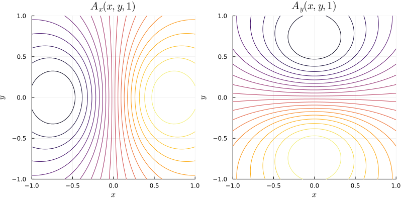
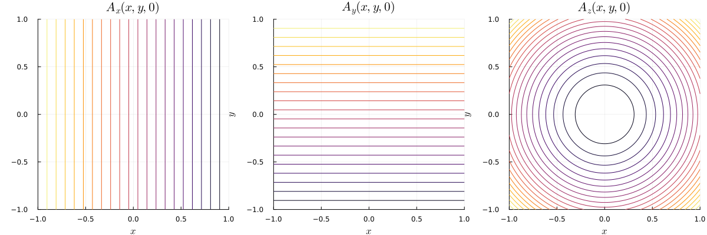
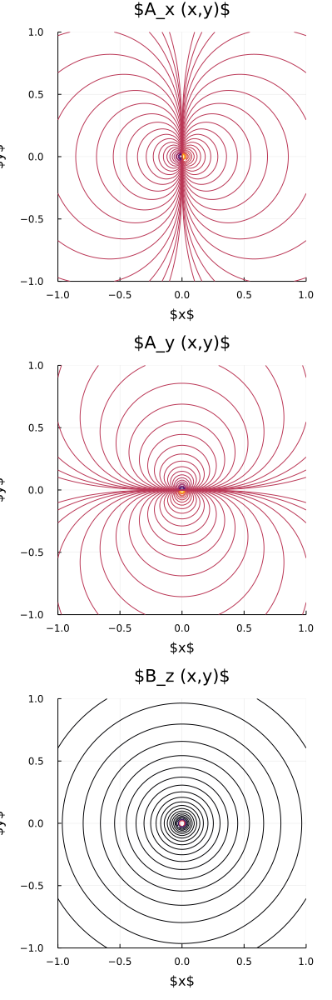
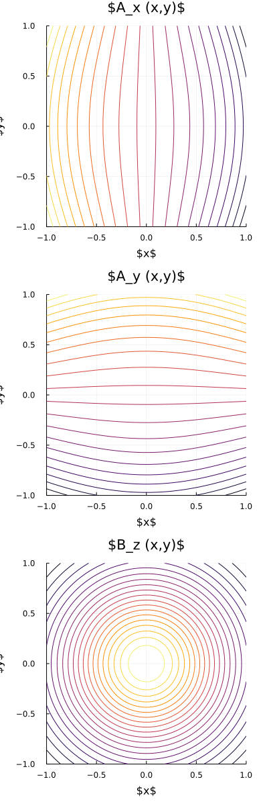
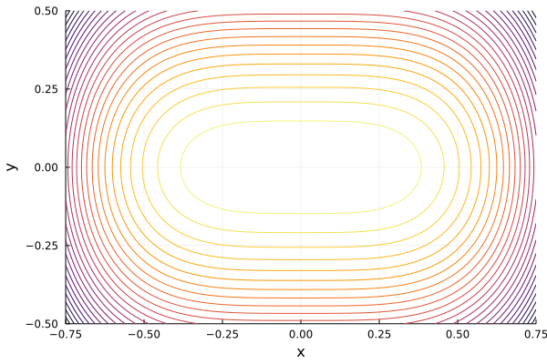
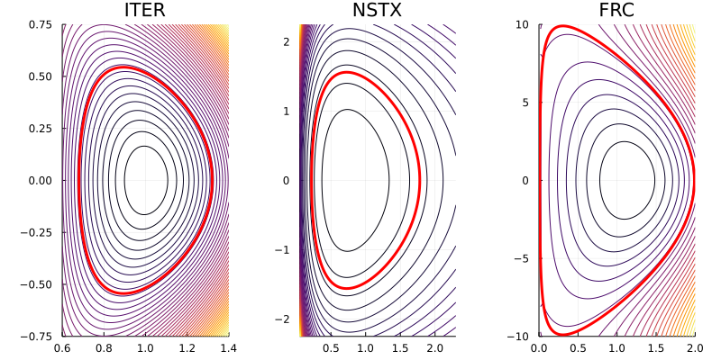
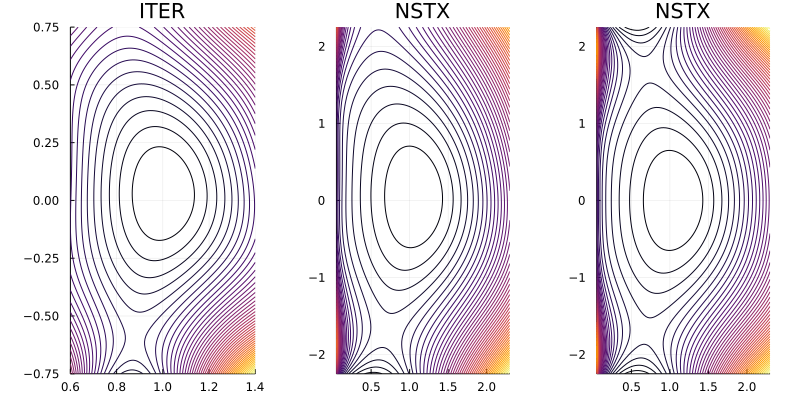
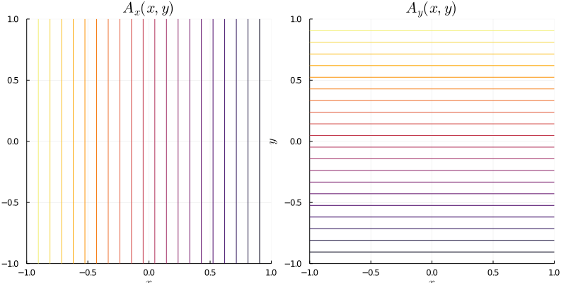

Analytic Fields
Arnold-Beltrami-Childress (ABC) Field
ElectromagneticFields.ABC — Module
Arnold-Beltrami-Childress (ABC) field in (x,y,z) coordinates with covariant components of the vector potential given by
\[A (x,y,z) = \big( a \, \sin(z) + c \, \cos(y) , \, b \, \sin(x) + a \, \cos(z) , \, c \, \sin(y) + b \, \cos(x) \big)^T\]
resulting in the magnetic field $B(x,y,z) = A(x,y,z)$.
Parameters: a, b, c
Absolut value of the magnetic field:

Axisymmetric Tokamak Equilibrium in Cartesian Coordinates
ElectromagneticFields.AxisymmetricTokamakCartesian — Module
Axisymmetric tokamak equilibrium in (x,y,z) coordinates with covariant components of the vector potential given by
\[A (x,y,z) = \frac{1}{2} \frac{B_0}{q_0} \, \bigg( \frac{q_0 R_0 x z - r^2 y}{R^2} , \, \frac{q_0 R_0 y z + r^2 x}{R^2} , \, - q_0 R_0 \, \ln \bigg( \frac{R}{R_0} \bigg) \bigg)^T ,\]
resulting in the magnetic field with covariant components
\[B (x,y,z) = \frac{B_0}{q_0} \, \bigg( - \frac{q_0 R_0 y + x z}{R^2} , \, \frac{q_0 R_0 x - y z}{R^2} , \, \frac{R - R_0}{R} \bigg)^T ,\]
where $R = \sqrt{ x^2 + y^2 }$ and $r = \sqrt{ (R - R_0)^2 + z^2 }$.
Parameters:
R₀: position of magnetic axisB₀: B-field at magnetic axisq₀: safety factor at magnetic axis
Vector potential in y direction:

Axisymmetric Tokamak Equilibrium in Cylindrical Coordinates
ElectromagneticFields.AxisymmetricTokamakCylindrical — Module
Axisymmetric tokamak equilibrium in (R,Z,ϕ) coordinates with covariant components of the vector potential given by
\[A (R, Z, \phi) = \frac{B_0}{2} \, \bigg( R_0 \, \frac{Z}{R} , \, - R_0 \, \ln \bigg( \frac{R}{R_0} \bigg) , \, - \frac{r^2}{q_0} \bigg)^T ,\]
resulting in the magnetic field with covariant components
\[B (R, Z, \phi) = \frac{B_0}{q_0} \, \bigg( - \frac{Z}{R} , \, \frac{R - R_0}{R} , \, - q_0 R_0 \bigg)^T ,\]
where $r = \sqrt{ (R - R_0)^2 + Z^2 }$.
Parameters:
R₀: position of magnetic axisB₀: B-field at magnetic axisq₀: safety factor at magnetic axis
Vector potential in y direction:

Axisymmetric Tokamak Equilibrium in Toroidal Coordinates
ElectromagneticFields.AxisymmetricTokamakToroidal — Module
Axisymmetric tokamak equilibrium in (r,θ,ϕ) coordinates with covariant components of the vector potential given by
\[A (r, \theta, \phi) = B_0 \, \bigg( 0 , \, \frac{r R_0}{\cos (\theta)} - \bigg( \frac{R_0}{\cos (\theta)} \bigg)^2 \, \ln \bigg( \frac{R}{R_0} \bigg) , \, - \frac{r^2}{2 q_0} \bigg)^T ,\]
resulting in the magnetic field with covariant components
\[B (r, \theta, \phi) = \frac{B_0}{q_0} \, \bigg( 0 , \, \frac{r^2}{R}, \, q_0 R_0 \bigg)^T ,\]
where $R = R_0 + r \cos \theta$.
Parameters:
R₀: position of magnetic axisB₀: B-field at magnetic axisq₀: safety factor at magnetic axis
Vector potential in y direction:

Dipole
ElectromagneticFields.Dipole — Module
Dipole magnetic field in (x,y,z) coordinates Based on Xinjie Li, Ruili Zhang, and Jian Liu, Symplectic Runge-Kutta methods for the guiding center dynamics.
The covariant components of the vector potential are given by
\[A (x,y,z) = \frac{B₀}{r^3} \big( y , \, -x , \, 0 \big)^T ,\]
resulting in the magnetic field with covariant components
\[B (x,y,z) = - \frac{B₀}{r^5} \big( 3xz, \, 3yz, \, 2z^2 - x^2 - y^2 \big)^T .\]
Vector potential components:

Penning Trap with Uniform Magnetic Field
ElectromagneticFields.PenningTrapUniform — Module
Penning trap with uniform magnetic field in (x,y,z) coordinates. Based on Yanyan Shi, Yajuan Sun, Yulei Wang, Jian Liu, Study of adaptive symplectic methods for simulating charged particle dynamics, Journal of Computational Dynamics 6, 429-448, 2019.
The covariant components of the vector potential are given by
\[A (x,y,z) = B_0 \, ( 0, x, 0)^T ,\]
resulting in the magnetic field with covariant components
\[B (x,y,z) = B_0 \, ( 0, 0, 1)^T ,\]
and the electrostatic potential given by
\[\varphi (x,y,z) = E_0 \, ( x^2 / 2 + y^2 / 2 - z^2) ,\]
resulting in the electric field with covariant components
\[E (x,y,z) = E_0 \, ( x, y, - 2 z)^T .\]
Parameters:
B₀: B-field strengthE₀: E-field strength
Penning Trap with Magnetic Bottle
ElectromagneticFields.PenningTrapBottle — Module
Penning trap with magnetic bottle in (x,y,z) coordinates. Based on Yanyan Shi, Yajuan Sun, Yulei Wang, Jian Liu, Study of adaptive symplectic methods for simulating charged particle dynamics, Journal of Computational Dynamics 6, 429-448, 2019.
The covariant components of the vector potential are given by
\[A (x,y,z) = B_0 / 2 \, ( -y , x, 0)^T - B_1 \, (xz, yz, (x^2 + y^2)/2 - z^2)^T,\]
resulting in the magnetic field with covariant components
\[B (x,y,z) = B_0 \, ( 0, 0, 1)^T - B_1 \, ( yz^2 - y^3 / 6, x^3 / 6, xyz )^T ,\]
and the electrostatic potential given by
\[\varphi (x,y,z) = E_0 \, ( x^2 / 2 + y^2 / 2 - z^2) ,\]
resulting in the electric field with covariant components
\[E (x,y,z) = E_0 \, ( x, y, - 2 z)^T .\]
Parameters:
B₀: B-field strengthBₚ: B-field perturbation strengthE₀: E-field strength
Penning Trap with Asymmetric Magnetic Field
ElectromagneticFields.PenningTrapAsymmetric — Module
Penning trap with asymmetric magnetic field in (x,y,z) coordinates. Based on Yanyan Shi, Yajuan Sun, Yulei Wang, Jian Liu, Study of adaptive symplectic methods for simulating charged particle dynamics, Journal of Computational Dynamics 6, 429-448, 2019.
The covariant components of the vector potential are given by
\[A (x,y,z) = B_0 / 2 \, ( -y , x-z/6, y / 6)^T + B_1 / 2 \, (z^2 - y^2, z^2 - x^2, y^2 - x^2)^T,\]
resulting in the magnetic field with covariant components
\[B (x,y,z) = B_0 \, ( 1/3, 0, 1)^T + B_1 \, ( y-z, x+z, y-x )^T ,\]
and the electrostatic potential given by
\[\varphi (x,y,z) = E_0 \, ( x^2 / 2 + y^2 / 2 - z^2) ,\]
resulting in the electric field with covariant components
\[E (x,y,z) = E_0 \, ( x, y, - 2 z)^T .\]
Parameters:
B₀: B-field strengthBₚ: B-field perturbation strengthE₀: E-field strength
Quadratic Potentials
ElectromagneticFields.QuadraticPotentials — Module
Electromagnetic field with quadratic potentials in (x,y,z) coordinates Based on Xinjie Li, Ruili Zhang, and Jian Liu, Symplectic Runge-Kutta methods for the guiding center dynamics.
The covariant components of the vector potential are given by
\[A (x,y,z) = \bigg( -50y , \, 50x , \, \frac{x^2 + y^2}{2} \bigg)^T ,\]
resulting in the magnetic field with covariant components
\[B (x,y,z) = \big( y, \, -x, \, 100 \big)^T ,\]
and electrostatic potential
\[\phi (x,y,z) = \frac{1}{2} \big( x^2 + y^2 + z^2 \big) .\]
Vector potential components:

Singular Magnetic Field
ElectromagneticFields.Singular — Module
Singular magnetic field in (x,y,z) coordinates with covariant components of the vector potential given by
\[A (x,y,z) = \frac{B_0}{\sqrt{(x^2 + y^2)}^3} \big( y , \, - x , \, 0 \big)^T\]
resulting in the magnetic field with covariant components
\[B(x,y,z) = B_0 \, \begin{pmatrix} 0 \\ 0 \\ (x^2 + y^2)^{-3/2} \\ \end{pmatrix}\]
Parameters: B₀
Vector potential and magnetic field components:

Symmetric Magnetic Field
ElectromagneticFields.SymmetricQuadratic — Module
Symmetric quadratic mangetic field in (x,y,z) coordinates with covariant components of the vector potential given by
\[A (x,y,z) = \frac{B_0}{4} \big( - y \, (2 + x^2 + y^2) , \, x \, (2 + x^2 + y^2) , \, 0 \big)^T\]
resulting in the magnetic field with covariant components
\[B(x,y,z) = B_0 \, \begin{pmatrix} 0 \\ 0 \\ 1 + x^2 + y^2 \\ \end{pmatrix}\]
Parameters: B₀
Vector potential and magnetic field components:

Symmetric Solov'ev Equilibrium
ElectromagneticFields.SolovevSymmetric — Module
Symmetric Solov'ev equilibrium in (R,Z,phi) coordinates. Based on McCarthy, Physics of Plasmas 6, 3554, 1999.
The covariant components of the vector potential are given by
\[A (x, y) = \frac{B_0}{2} \, \bigg( 0 , \, 0 , \, - \frac{\alpha}{4} (R_0 + x)^4 - \beta y^2 \bigg)^T ,\]
Parameters:
R₀: position of magnetic axisB₀: B-field at magnetic axisα,β: free constants
Vector potential in z direction:

Solov'ev Equilibrium (Antoine Cerfon)
Solov'ev Equilibrium up/down symmetric
ElectromagneticFields.Solovev.SolovevEquilibrium — Type
Axisymmetric Solov'ev equilibra in (R/R₀,Z/R₀,ϕ) coordinates. Based on Cerfon & Freidberg, Physics of Plasmas 17, 032502, 2010, and Freidberg, Ideal Magnetohydrodynamics, 2014.
The covariant components of the vector potential are given by
\[A (x, y, \phi) = \left( \frac{B_0 R_0}{2} \, \frac{y}{x} , \, - \frac{B_0 R_0}{2} \, \ln x , \, \psi(x,y) \right)^T ,\]
with $x = R/R_0$ and $y = Z/R_0$. The normalised poloidal flux $\psi$ is given by
\[\psi (x,y) = \psi_0 + \sum \limits_{i=1}^{7} c_i \psi_i (x,y) ,\]
with
\[\begin{aligned} \psi_{0} &= \frac{x^4}{8} + \alpha \left( \frac{1}{2} x^2 \, \ln x - \frac{x^4}{8} \right) , \\ \psi_{1} &= 1 , \\ \psi_{2} &= x^2 , \\ \psi_{3} &= y^2 - x^2 \, \ln x , \\ \psi_{4} &= x^4 - 4 x^2 y^2 , \\ \psi_{5} &= 2 y^4 9 y^2 x^2 + 3 x^4 \, \ln x - 12 x^2 y^2 \, \ln x , \\ \psi_{6} &= x^6 - 12 x^4 y^2 + 8 x^2 y^4 , \\ \psi_{7} &= 8 y^6 - 140 y^4 x^2 + 75 y^2 x^4 - 15 x^6 \, \ln x + 180 x^4 y^2 \, \ln x - 120 x^2 y^4 \, \ln x . \end{aligned}\]
This formula describes exact solutions of the Grad-Shafranov equation with up-down symmetry. The constants $c_i$ are determined from boundary constraints on $\psi$, that are derived from the following analytic model for a smooth, elongated "D" shaped cross section:
\[\begin{aligned} x &= 1 + \epsilon \, \cos (\tau + \delta_0 \, \sin \tau) , \\ y &= \epsilon \kappa \, \sin (\tau) , \end{aligned}\]
where $0 \leq \tau < 2 \pi$, $\epsilon = a / R_0$ is the inverse aspect ratio, $\kappa$ the elongation, and $\sin \delta_0 = \delta$ is the triangularity.
Defining three test points, namely
- the high point $(1 - \delta \epsilon, \kappa \epsilon)$,
- the inner equatorial point $(1 - \epsilon, 0)$,
- and the outer equatorial point $(1 + \epsilon, 0)$,
the following geometric constraints can be posed on the solution:
\[\begin{aligned} \psi (1 + \epsilon, 0) &= 0 , \\ \psi (1 - \epsilon, 0) &= 0 , \\ \psi (1 - \delta \epsilon, \kappa \epsilon) &= 0 , \\ \psi_{x} (1 - \delta \epsilon, \kappa \epsilon) &= 0 , \\ \psi_{yy} (1 + \epsilon, 0) &= - N_1 \psi_{x} (1 + \epsilon, 0) , \\ \psi_{yy} (1 - \epsilon, 0) &= - N_2 \psi_{x} (1 - \epsilon, 0) , \\ \psi_{xx} (1 - \delta \epsilon, \kappa \epsilon) &= - N_3 \psi_y (1 - \delta \epsilon, \kappa \epsilon) . \end{aligned}\]
The first three equations define the three test points, the fourth equations enforces the high point to be a maximum, and the last three equations define the curvature at the test points.
The coefficients $N_j$ can be found from the analytic model cross section as
\[\begin{aligned} N_1 &= \left[ \frac{d^2 x}{dy^2} \right]_{\tau = 0} = - \frac{(1 + \delta_0)^2}{\epsilon \kappa^2} , \\ N_2 &= \left[ \frac{d^2 x}{dy^2} \right]_{\tau = \pi} = \hphantom{-} \frac{(1 - \delta_0)^2}{\epsilon \kappa^2} , \\ N_3 &= \left[ \frac{d^2 x}{dy^2} \right]_{\tau = \pi/2} = - \frac{\kappa}{\epsilon \, \cos^2 \delta_0} . \end{aligned}\]
For a given value of the constant $a$ above conditions reduce to a set of seven linear inhomogeneous algebraic equations for the unknown $c_i$, which can easily be solved.
Parameters:
R₀: position of magnetic axisB₀: B-field at magnetic axisϵ: inverse aspect ratioκ: elongationδ: triangularityα: free constant, determined to match a given beta value
Vector potential in ITER, NSTX and a field reversed configuration:

Solov'ev Equilibrium with X-Point
ElectromagneticFields.Solovev.SolovevXpointEquilibrium — Type
Axisymmetric Solov'ev equilibra with X-point in (R/R₀,Z/R₀,phi) coordinates. Based on Cerfon & Freidberg, Physics of Plasmas 17, 032502, 2010, and Freidberg, Ideal Magnetohydrodynamics, 2014.
The covariant components of the vector potential are given by
\[A (x, y, \phi) = \left( \frac{B_0 R_0}{2} \, \frac{y}{x} , \, - \frac{B_0 R_0}{2} \, \ln x , \, \psi(x,y) \right)^T ,\]
with $x = R/R_0$ and $y = Z/R_0$. The normalised poloidal flux $\psi$ is given by
\[\psi (x,y) = \psi_0 + \sum \limits_{i=1}^{12} c_i \psi_i (x,y) ,\]
with
\[\begin{aligned} \psi_{0} &= \frac{x^4}{8} + \alpha \left( \frac{1}{2} x^2 \, \ln x - \frac{x^4}{8} \right) , \\ \psi_{1} &= 1 , \\ \psi_{2} &= x^2 , \\ \psi_{3} &= y^2 - x^2 \, \ln x , \\ \psi_{4} &= x^4 - 4 x^2 y^2 , \\ \psi_{5} &= 2 y^4 9 y^2 x^2 + 3 x^4 \, \ln x - 12 x^2 y^2 \, \ln x , \\ \psi_{6} &= x^6 - 12 x^4 y^2 + 8 x^2 y^4 , \\ \psi_{7} &= 8 y^6 - 140 y^4 x^2 + 75 y^2 x^4 - 15 x^6 \, \ln x + 180 x^4 y^2 \, \ln x - 120 x^2 y^4 \, \ln x , \\ \psi_{8} &= y , \\ \psi_{9} &= y x^2 , \\ \psi_{10} &= y^3 - 3 y x^2 \, \ln x , \\ \psi_{11} &= 3 y x^4 - 4 y^3 x^2 , \\ \psi_{12} &= 8 y^5 - 45 y x^4 - 80 y^3 x^2 \, \ln x + 60 y x^4 \, \ln x . \end{aligned}\]
This formula describes exact solutions of the Grad-Shafranov equation with up-down asymmetry. The constants $c_i$ are determined from boundary constraints on $\psi$, that are derived from the following analytic model for a smooth, elongated "D" shaped cross section:
\[\begin{aligned} x &= 1 + \epsilon \, \cos (\tau + \arcsin \delta \, \sin \tau) , \\ y &= \epsilon \kappa \, \sin (\tau) , \end{aligned}\]
where $0 \leq \tau < 2 \pi$, $\epsilon = a / R_0$ is the inverse aspect ratio, $\kappa$ the elongation, and $\sin \delta_0 = \delta$ is the triangularity.
Defining four test points, namely
- the high point $(1 - \delta \epsilon, \kappa \epsilon)$,
- the inner equatorial point $(1 - \epsilon, 0)$,
- and the outer equatorial point $(1 + \epsilon, 0)$,
- the position of the X-point $(x_{\mathrm{sep}}, y_{\mathrm{sep}})$,
the following geometric constraints can be posed on the solution:
\[\begin{aligned} \psi (1 + \epsilon, 0) &= 0 , \\ \psi (1 - \epsilon, 0) &= 0 , \\ \psi (1 - \delta \epsilon, \kappa \epsilon) &= 0 , \\ \psi (x_{\mathrm{sep}}, y_{\mathrm{sep}}) &= 0 , \\ \psi_{y} (1 + \epsilon, 0) &= 0 , \\ \psi_{y} (1 - \epsilon, 0) &= 0 , \\ \psi_{x} (1 - \delta \epsilon, \kappa \epsilon) &= 0 , \\ \psi_{x} (x_{\mathrm{sep}}, y_{\mathrm{sep}}) &= 0 , \\ \psi_{y} (x_{\mathrm{sep}}, y_{\mathrm{sep}}) &= 0 , \\ \psi_{yy} (1 + \epsilon, 0) &= - N_1 \psi_{x} (1 + \epsilon, 0) , \\ \psi_{yy} (1 - \epsilon, 0) &= - N_2 \psi_{x} (1 - \epsilon, 0) , \\ \psi_{xx} (1 - \delta \epsilon, \kappa \epsilon) &= - N_3 \psi_y (1 - \delta \epsilon, \kappa \epsilon) . \end{aligned}\]
The first four equations define the four test points, the fifth and sixth equations define the up-down symmetry, the seventh equations enforces the high point to be a maximum, the eighth and ninth eqaution set the $x$- and $y$-components of the magnetic field at the X-point to zero, and the last three equations define the curvature at the first three test points.
The coefficients $N_j$ can be found from the analytic model cross section as
\[\begin{aligned} N_1 &= \left[ \frac{d^2 x}{dy^2} \right]_{\tau = 0} = - \frac{(1 + \delta_0)^2}{\epsilon \kappa^2} , \\ N_2 &= \left[ \frac{d^2 x}{dy^2} \right]_{\tau = \pi} = \hphantom{-} \frac{(1 - \delta_0)^2}{\epsilon \kappa^2} , \\ N_3 &= \left[ \frac{d^2 x}{dy^2} \right]_{\tau = \pi/2} = - \frac{\kappa}{\epsilon \, \cos^2 \delta_0} . \end{aligned}\]
For a given value of the constant $a$ above conditions reduce to a set of seven linear inhomogeneous algebraic equations for the unknown $c_i$, which can easily be solved.
Parameters:
R₀: position of magnetic axisB₀: B-field at magnetic axisϵ: inverse aspect ratioκ: elongationδ: triangularityα: free constant, determined to match a given beta valuexsep: x position of the X pointysep: y position of the X point
Vector potential in ITER and NSTX:

Theta Pinch
ElectromagneticFields.ThetaPinch — Module
θ-pinch equilibrium in (x,y,z) coordinates with covariant components of the vector potential given by
\[A (x,y,z) = \frac{B_0}{2} \big( - y , \, x , \, 0 \big)^T\]
resulting in the magnetic field with covariant components
\[B (x,y,z) = \big( 0 , \, 0 , \, B_0 \big)^T .\]
Parameters: B₀: B-field at magnetic axis
Vector potential components:
